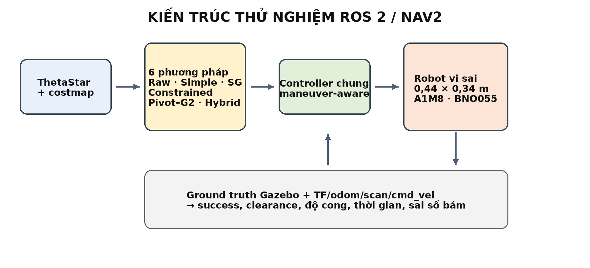
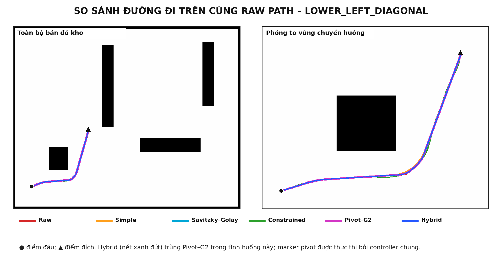
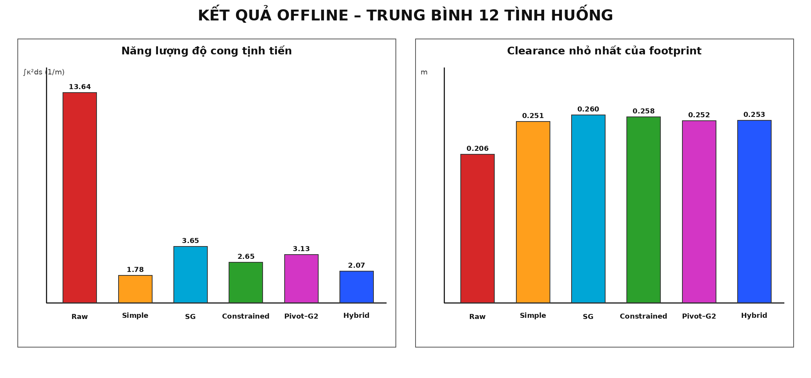
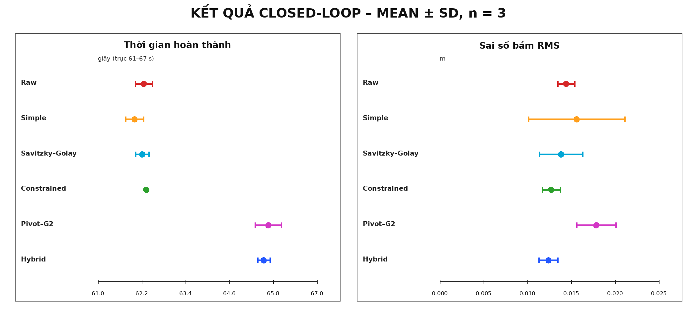

[Khoa/Viện], [Tên trường/đơn vị]
*Email: [điền email liên hệ]
Tóm tắt. Đường đi do bộ lập kế hoạch trên lưới sinh ra thường chứa các góc gấp, trong khi robot hai bánh vi sai bị giới hạn bởi tốc độ bánh xe, tốc độ góc, gia tốc và kích thước thân. Bài báo này trình bày một bộ hậu xử lý đường đi lai có cổng an toàn, gọi là Safety-Gated Adaptive Hybrid Pivot–G2. Phương pháp tạo hai phương án từ cùng một đường thô: đường làm mượt nhanh bằng Nav2 Simple Smoother và đường Pivot–G2 gồm các đoạn chuyển tiếp Bézier bậc năm có độ cong bằng không tại điểm ghép, kết hợp quay tại chỗ khi cần. Bộ chọn chỉ dùng Pivot–G2 khi phương án Simple không an toàn, hoặc khi chi phí lân cận vật cản được cải thiện đủ lớn mà năng lượng độ cong vẫn nằm trong ngân sách định trước; các trường hợp còn lại giữ nguyên Simple. Hệ thống được hiện thực hoàn toàn bằng C++/Python trên ROS 2 Jazzy, Nav2 và Gazebo Harmonic cho robot vi sai kích thước 0,44 × 0,34 m. Thử nghiệm offline trên 12 cặp điểm đầu–đích cho thấy Hybrid giữ Simple ở 9 trường hợp và chọn Pivot–G2 ở 3 trường hợp. Trong thử nghiệm closed-loop lower_left_diagonal, cả 18/18 lượt của sáu phương pháp đều tới đích theo ground truth và không ghi nhận va chạm; Hybrid tăng clearance nhỏ nhất khoảng 1,9 cm so với Simple nhưng cần thêm trung bình 3,54 s. Kết quả cho thấy lợi ích chính của phương pháp là lựa chọn có điều kiện và biểu diễn maneuver rõ ràng, không phải luôn nhanh hoặc luôn mượt hơn mọi baseline.
Từ khóa: robot vi sai; ROS 2; Nav2; làm mượt đường đi; Bézier G2; quay tại chỗ; swept footprint; Gazebo.
Robot tự hành trong nhà thường thực hiện ba bước liên tiếp: lập đường đi toàn cục, biến đường hình học thành tham chiếu có thể bám, và sinh lệnh vận tốc cho cơ cấu chấp hành. ROS 2 Navigation2 (Nav2) cung cấp kiến trúc mô-đun cho các bước này và cho phép thay thế planner, smoother và controller bằng plugin [1], [2]. Trong nghiên cứu này, ThetaStar được dùng để tạo đường toàn cục vì thuật toán any-angle giảm sự phụ thuộc vào các hướng cố định của lưới [3]. Tuy nhiên, một đường ngắn về hình học chưa chắc phù hợp với robot có footprint chữ nhật và giới hạn động học.
Nav2 đã có các bộ làm mượt chuẩn như Simple, Savitzky–Golay và Constrained Smoother [2], [4]. Simple có ưu điểm nhanh và thường giảm mạnh góc gấp, nhưng không giữ ràng buộc động học. Savitzky–Golay phù hợp lọc nhiễu cục bộ trên chuỗi điểm [5]. Constrained Smoother tối ưu đồng thời độ trơn, khoảng cách vật cản và bán kính quay, nhưng có chi phí tính toán và phụ thuộc cấu hình. Với robot vi sai, quay tại chỗ là một khả năng hợp lệ; vì vậy việc luôn ép mọi góc thành đường cong tiến liên tục có thể không phải lựa chọn tốt nhất.
Ý tưởng Pivot–G2 ban đầu của nghiên cứu này chọn giữa hai hành vi: (i) dừng và quay tại chỗ tại góc; hoặc (ii) thay góc bởi đường Bézier bậc năm nối hình học G2 với hai đoạn thẳng. Kiểm toán và pilot ban đầu chỉ ra rằng claim “Pivot–G2 luôn mượt hơn hoặc nhanh hơn smoother Nav2” không đúng: Simple đạt năng lượng độ cong thấp hơn trong tập 12 tình huống. Do đó, bài báo chuyển trọng tâm sang một bộ chọn Hybrid có fallback rõ ràng. Đây là thay đổi quan trọng để kết luận bám đúng bằng chứng thay vì chỉ giữ giả thuyết ban đầu.
Các đóng góp kỹ thuật hiện tại gồm:
Đối tượng thử nghiệm là robot hai bánh chủ động vi sai, thân dài 0,44 m, rộng 0,34 m; bán kính bánh xe 0,0425 m và khoảng cách giữa hai vệt lăn theo mô hình CAD là 0,2548 m. Mô hình Gazebo sử dụng khoảng cách hiệu dụng 0,2809 m sau bước hiệu chỉnh tiếp xúc để odometry quay khớp ground truth. Phần cứng dự kiến gồm hai động cơ GA25 130 rpm, encoder 1320 tick/vòng, lidar RPLIDAR A1M8 và IMU BNO055. Trong bài báo hiện tại, các kết quả định lượng được sinh trong mô phỏng; tên cảm biến chỉ mô tả cấu hình đích, chưa được dùng để khẳng định chất lượng robot thật.
Với vận tốc tuyến tính của tâm robot là v, tốc độ góc là ω và khoảng cách hai bánh là L, vận tốc dài tại hai bánh được tính bởi:
Với đoạn chuyển động tịnh tiến có độ cong κ, ta có ω = vκ. Bởi vậy một đường hình học được chấp nhận chỉ khi profile vận tốc thỏa đồng thời giới hạn vận tốc tuyến tính, tốc độ góc, tốc độ hai bánh, gia tốc tuyến tính và gia tốc góc.
Hình 1 mô tả pipeline. ThetaStar tạo đúng một nav_msgs/Path. Raw path này được đưa tuần tự vào năm smoother: Simple, Savitzky–Golay, Constrained, Pivot–G2 và Adaptive Hybrid. Việc gửi tuần tự là cần thiết vì Smoother Server chỉ sở hữu một action server; gửi đồng thời có thể làm thứ tự nhận request phụ thuộc timing. Mọi đường được bám bằng cùng controller Regulated Pure Pursuit mở rộng nhận biết maneuver [6].

Để tránh đánh giá sai maneuver quay tại chỗ như một điểm có độ cong vô hạn, đường được tách thành các đoạn tịnh tiến và các marker pivot. Độ trơn của phần tịnh tiến được đặc trưng bằng năng lượng độ cong:
Giá trị nhỏ biểu thị tổng mức uốn thấp hơn nhưng không đồng nghĩa tuyệt đối với an toàn hoặc thời gian ngắn hơn. Clearance được đo từ biên của footprint chữ nhật đã quét theo cả vị trí và hướng tới ô vật cản gần nhất, không đo từ tâm robot. Closed-loop bổ sung thời gian hoàn thành, RMS/max sai số bám, sai số vị trí–góc tại đích, tỷ lệ lệnh dừng và collision-monitor intervention.
Giả sử một góc được tạo bởi hướng vào đơn vị ein và hướng ra eout. Hai điểm đầu/cuối của cửa sổ chuyển tiếp là P0 và P5. Sáu điểm điều khiển được đặt theo cấu trúc đối xứng:
Đường Bézier bậc năm được tính theo đa thức Bernstein [7]:
Cách bố trí (3) làm đạo hàm bậc hai tại hai đầu bằng không. Khi đạo hàm bậc nhất khác không, độ cong ở hai đầu cũng bằng không; vì vậy đường cong nối với hai đoạn thẳng đạt liên tục hình học G2 về vị trí, tiếp tuyến và độ cong. Bài báo dùng thuật ngữ G2, không gọi là C2 vì C2 còn phụ thuộc tham số hóa của hai đoạn ghép.
Tại mỗi góc, plugin thử tập tham số thiết kế {0,20; 0,30; 0,40; 0,50; 0,60; 0,75; 1,00; 1,25; 1,50} m. Mỗi ứng viên được lấy mẫu 0,02 m, kiểm tra overlap cửa sổ, dấu độ cong, giới hạn bánh trong, swept footprint và profile thời gian. Trọng số xếp hạng hiện tại là 0,15 cho clearance, 0,10 cho tốc độ góc và 0,75 cho năng lượng độ cong; đây là tham số đã tuning và phải được khóa trước test set cuối.
Pivot được biểu diễn bởi hai pose có cùng tọa độ nhưng orientation khác nhau. Cách biểu diễn này giữ được thông tin “dừng–quay–đi tiếp” trong giao diện nav_msgs/Path, vốn không có trường mode riêng. Controller chung tách đường tại marker này, giảm tốc về gần không, quay theo sai số yaw với giới hạn tốc độ và gia tốc góc, sau đó mới chuyển sang đoạn tịnh tiến kế tiếp. Tất cả baseline cũng đi qua controller này; nếu không có marker, hành vi trở về RPP thông thường.
Hybrid trực tiếp tạo hai candidate từ cùng raw path: PS từ Simple và PG từ Pivot–G2. Mỗi candidate được nội suy swept footprint với bước 0,025 m để lấy trạng thái an toàn, peak proximity cost C và năng lượng độ cong tịnh tiến E. Quy tắc chọn hiện tại là:
Nếu Pivot–G2 không an toàn hoặc không đạt đồng thời hai điều kiện ở (5), Hybrid trả nguyên đường Simple. Nếu cả hai không an toàn, smoother báo lỗi thay vì xuất một đường rủi ro. Nhờ đó, phương pháp không phải trả chi phí pivot trong tình huống mà lợi ích an toàn chưa đủ rõ.
Sáu phương pháp được so sánh gồm Raw, Nav2 Simple, Savitzky–Golay, Constrained, Pivot–G2 và Adaptive Hybrid. Trong mỗi scenario, cả sáu nhận cùng một raw path; hash SHA-256 của input và output được lưu. LOS pruning bị tắt trong phương pháp đề xuất vì nếu chỉ Pivot–G2 được rút gọn đường trước smoothing thì kết quả sẽ trộn lợi ích của pruning với smoothing. Cùng map, footprint, collision checker, tốc độ giới hạn và controller được áp dụng cho tất cả phương pháp.
Tập pilot gồm 12 cặp start–goal trong map kho: đường thẳng, vòng qua thùng, vòng qua rack ngang/dọc, đường chéo dài, đi từ nam lên bắc và hai đường góc khó. Mỗi phương pháp sinh một output cho từng scenario, tạo 72 record. Clearance được tính bằng full footprint 0,44 × 0,34 m có xét yaw. Đây là tập pilot; một raw path từng có tie-break khác khi khởi động planner ở batch khác, nên dataset chính thức sau này phải lưu cố định raw path và costmap snapshot.
Scenario lower_left_diagonal được chạy ba lần cho mỗi phương pháp, tổng 18 trial. Mỗi trial dùng ROS domain và Gazebo partition/process group riêng. Success chỉ được công nhận khi action controller thành công và ground truth nằm trong 0,10 m, 0,15 rad so với goal. Runner kiểm tra physical spawn trước planning, tự dừng Gazebo sau mỗi trial và cảnh báo nếu raw path hash không đồng nhất.
Hình 2 chồng sáu output lấy trực tiếp từ topic /research/path/<method>. Raw, Simple, Savitzky–Golay và Constrained có 88 pose; Pivot–G2 và Hybrid có 149 pose do lấy mẫu dày đường chuyển tiếp và thêm marker pivot. Trong tình huống này Hybrid chọn Pivot–G2 vì peak proximity cost giảm từ 202 xuống 177 và năng lượng 2,764 vẫn nằm trong ngân sách (5). Vì vậy hai đường trùng nhau về tọa độ; nét đứt dùng để người đọc nhận biết Hybrid.

| Phương pháp | Eκ tịnh tiến TB (1/m) | Clearance min TB (m) | Clearance p05 TB (m) | Tổng marker pivot |
|---|---|---|---|---|
| Raw | 13,6394 | 0,2056 | 0,2682 | 0 |
| Simple | 1,7798 | 0,2507 | 0,2774 | 0 |
| Savitzky–Golay | 3,6514 | 0,2598 | 0,2908 | 0 |
| Constrained | 2,6459 | 0,2575 | 0,2915 | 0 |
| Pivot–G2 | 3,1306 | 0,2518 | 0,2858 | 14 |
| Adaptive Hybrid | 2,0718 | 0,2528 | 0,2817 | 4 |
Simple có năng lượng độ cong tịnh tiến thấp nhất. Savitzky–Golay đạt clearance min trung bình cao nhất, còn Constrained đạt p05 cao nhất. Pivot–G2 không thắng tuyệt đối hai nhóm chỉ tiêu này. Hybrid giữ Simple ở 9/12 tình huống và chỉ chọn Pivot–G2 tại horizontal_rack_detour, right_rack_detour và lower_left_diagonal; nhờ vậy năng lượng trung bình của Hybrid gần Simple hơn Pivot–G2. Hình 3 thể hiện trực quan đánh đổi này.

| Phương pháp | Success | Thời gian mean ± SD (s) | RMS bám mean ± SD (m) | Sai số đích TB: vị trí / yaw | Clearance min / p05 (m) |
|---|---|---|---|---|---|
| Raw | 3/3 | 62,258 ± 0,232 | 0,01443 ± 0,00095 | 0,042 / 0,096 | 0,145 / 0,215 |
| Simple | 3/3 | 62,007 ± 0,245 | 0,01563 ± 0,00551 | 0,040 / 0,084 | 0,215 / 0,220 |
| Savitzky–Golay | 3/3 | 62,211 ± 0,182 | 0,01384 ± 0,00248 | 0,048 / 0,078 | 0,247 / 0,247 |
| Constrained | 3/3 | 62,320 ± 0,023 | 0,01272 ± 0,00104 | 0,049 / 0,079 | 0,234 / 0,247 |
| Pivot–G2 | 3/3 | 65,665 ± 0,362 | 0,01785 ± 0,00224 | 0,043 / 0,094 | 0,234 / 0,247 |
| Adaptive Hybrid | 3/3 | 65,543 ± 0,167 | 0,01239 ± 0,00109 | 0,045 / 0,099 | 0,234 / 0,247 |
Cả 18/18 trial đạt đích theo action và ground truth; không có footprint collision sample hoặc collision-monitor intervention. Hybrid tăng clearance min từ 0,2146 m của Simple lên 0,2339 m, tương đương khoảng 1,9 cm. Đổi lại, thời gian tăng từ 62,007 s lên 65,543 s, tức khoảng 3,54 s do phải dừng và quay. RMS bám trung bình của Hybrid thấp nhất trong pilot này, nhưng n=3 và chỉ có một scenario nên chưa đủ cơ sở kiểm định thống kê hoặc tuyên bố ưu thế chung.

Điểm đáng chú ý là executed curvature-energy của các phương pháp gần nhau hơn nhiều so với reference energy. Nguyên nhân là controller chạy ở tốc độ thấp 0,08 m/s, có lookahead và lọc lệnh; quỹ đạo thực không tái tạo mọi biến thiên nhỏ của reference. Điều này cho thấy chỉ đánh giá đường hình học là chưa đủ: bài báo cần giữ cả tầng offline và closed-loop.
Bản thảo hiện tại có bốn giới hạn chính.
Nếu test held-out không cho thấy Hybrid tăng clearance ở nhóm hành lang/góc khó, claim an toàn phải được loại bỏ hoặc bài được định vị lại thành framework biểu diễn–thực thi maneuver. Nếu clearance tăng nhưng thời gian hoặc success xấu, kết quả phải được trình bày như một biên Pareto, không gọi là cải thiện toàn diện.
Bài báo đã trình bày một bộ hậu xử lý Hybrid Pivot–G2 có cổng an toàn trên ROS 2/Nav2 cho robot vi sai. Phương pháp kết hợp ưu điểm nhẹ và trơn của Simple với khả năng biểu diễn đường G2 và quay tại chỗ của Pivot–G2. Thay vì luôn áp dụng thuật toán phức tạp, Hybrid chỉ kích hoạt Pivot–G2 khi có cải thiện proximity cost đủ lớn và năng lượng độ cong nằm trong ngân sách định trước. Pilot offline cho thấy Hybrid fallback về Simple ở phần lớn tình huống; pilot closed-loop xác nhận toàn bộ 18 trial tới đích, đồng thời bộc lộ đánh đổi rõ giữa clearance và thời gian. Kết quả hiện tại chứng minh tính hoạt động và tính tái lập sơ bộ của hệ thống, nhưng chưa đủ để bảo đảm ưu thế thống kê hoặc khả năng công bố. Phần tiếp theo bắt buộc là dataset đa map đã khóa, nhiều lần lặp và robot thật.
[Điền nguồn hỗ trợ, phòng thí nghiệm, giảng viên hướng dẫn và đồng nghiệp. Xóa mục này nếu hội nghị không yêu cầu hoặc không có nguồn tài trợ.]
[1] S. Macenski, F. Martín, R. White và J. Ginés Clavero, “The Marathon 2: A Navigation System,” Proc. IEEE/RSJ IROS, tr. 2718–2725, 2020.
[2] Open Navigation LLC, “Navigation Plugins – Nav2 Documentation,” 2026. [Trực tuyến]. Địa chỉ: https://docs.nav2.org/plugins/.
[3] A. Nash, K. Daniel, S. Koenig và A. Felner, “Theta*: Any-Angle Path Planning on Grids,” Proc. AAAI, tr. 1177–1183, 2007.
[4] Open Navigation LLC, “Simple, Savitzky–Golay and Constrained Smoother Configuration – Nav2 Documentation,” 2026. [Trực tuyến]. Địa chỉ: https://docs.nav2.org/configuration/packages/.
[5] A. Savitzky và M. J. E. Golay, “Smoothing and Differentiation of Data by Simplified Least Squares Procedures,” Analytical Chemistry, tập 36, số 8, tr. 1627–1639, 1964, doi: 10.1021/ac60214a047.
[6] S. Macenski, S. Singh, F. Martín và J. Ginés, “Regulated Pure Pursuit for Robot Path Tracking,” Autonomous Robots, tập 47, số 6, tr. 685–694, 2023, doi: 10.1007/s10514-023-10097-6.
[7] G. Farin, Curves and Surfaces for CAGD: A Practical Guide, ấn bản 5. Morgan Kaufmann, 2002.
[8] P. E. Hart, N. J. Nilsson và B. Raphael, “A Formal Basis for the Heuristic Determination of Minimum Cost Paths,” IEEE Trans. Systems Science and Cybernetics, tập 4, số 2, tr. 100–107, 1968, doi: 10.1109/TSSC.1968.300136.
[9] S. Quinlan và O. Khatib, “Elastic Bands: Connecting Path Planning and Control,” Proc. IEEE ICRA, tr. 802–807, 1993.
[10] D. Dolgov, S. Thrun, M. Montemerlo và J. Diebel, “Path Planning for Autonomous Vehicles in Unknown Semi-structured Environments,” Int. J. Robotics Research, tập 29, số 5, tr. 485–501, 2010.